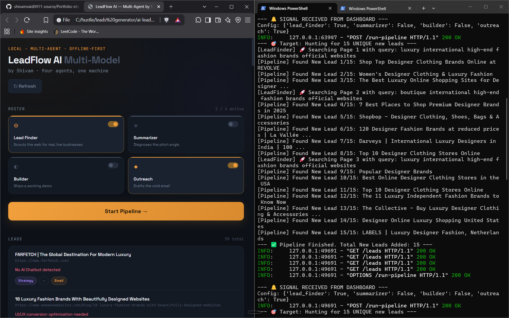

Four agents, one payroll of exactly zero rupees, working the same job a small outbound team would normally handle by hand. This is the full account of what each one does, how they hand work to each other, and where I drew the line between automation and judgment.
This system lives entirely on my own machine, there is no hosted link to click because there was never a server built to hold one. It is not productized, it does not send anything to anyone without my hand on the keyboard first. What follows is a faithful account of what the code actually does, not a rounded up version of it.
Cold outreach has a boring secret, the actual pitch is the easy part. The hard part sits before it, finding a business that genuinely needs what you're offering, figuring out precisely what's broken on their end, writing something that reads like you looked at their business specifically rather than a mail merge with their name dropped in, and if you want to stand out from the hundred other people pitching them that week, showing up with something already built instead of a promise.
Doing that properly for even ten businesses by hand eats a full day, and most of that day is repetition, not thinking. So the question I actually sat with wasn't "can AI write a cold email," everyone's already answered that one. The question was whether a chain of narrow, specialized agents could carry the entire research to pitch pipeline on their own, and leave me with only the one decision that actually requires judgment, who's worth reaching out to.
I ended up thinking of it less as one clever model and more as four employees on a very small team, each of them running on the same local brain, Qwen 2.5, but each of them given a completely different job description and a completely different prompt. A scout, an analyst, a builder, and a closer. None of them know how to do the others' job, and that's deliberate, a model asked to do four things at once tends to do all four averagely. A model asked to do exactly one thing, with a tightly scoped prompt, tends to do that one thing well.
Here's the org chart, if you want to call it that. Work flows in one direction, left to right, no employee sees the raw internet except the first one, and no employee touches the outside world except through the database at the very end.
Here's what actually happens, in order, when I flip the pipeline on, walked through against the real logic sitting in the codebase rather than a simplified summary of it.
Step one, the search begins. The Lead Finder is handed a niche, say boutique fashion brands, and constructs a search query using a randomly selected qualifier, top, emerging, boutique, exclusive, so that repeated runs don't just surface the same twenty results every time. That query goes out through Serper, a search API that returns real organic results rather than an LLM's guess at what might exist. Every result that's just a Facebook, Instagram, or LinkedIn profile gets discarded immediately, since there's no actual site there to diagnose or fix.
Step two, actually reading the page. Every candidate that survives the filter gets fetched for real, using a proper browser user agent so the request doesn't get silently blocked, and parsed with BeautifulSoup. The agent counts embedded images as a rough proxy for load speed, scans the visible text for any mention of a chat widget or live assistant, and pulls every email address sitting in the raw HTML using a regular expression. None of this is guessed from a page title, it's read directly off the page the way a person scanning quickly would do it.
Step three, turning observations into an argument. This is where the Summarizer, and the first real use of local inference, comes in. Qwen 2.5, running fully offline through Ollama, is prompted to think as a senior business analyst and return exactly three things, a read on what the brand's actual value proposition is, an explanation of why the detected technical issues translate into lost revenue rather than a minor inconvenience, and a specific recommendation for the fix. This step is the difference between a generic pitch and one that reads like someone actually looked.
Step four, building the proof. When the Builder is switched on in the pipeline's configuration, it reads the analyst's brief and generates a full, working, single file demo, not a static mockup, an actual functioning component styled with Tailwind to look considered rather than templated. A chatbot that responds, a checkout flow that flows. This step is what turns "we think we could help you" into "here's what it would actually look like," delivered before the business has even replied.
Step five, writing the ask. The Outreach Agent drafts the email itself, short paragraphs, framed around return on investment rather than features, closing on a specific, low friction ask for a short call. If step four produced a working demo, the draft references it directly, "I've already built this for you," rather than the weaker, more hypothetical "I could build this."
Step six, everything lands in one place, and stays there. Every field generated across the run, the brand name, the URL, the emails found on the page, the diagnosed issues, the full analyst brief, the generated demo code, and the drafted email, gets written into a local SQLite database as one row per lead. Nothing leaves the machine automatically at this point. I open the database myself, read through what four employees spent the last few minutes producing, and decide who's actually worth a real email from me.
Multi agent systems get described, often by the people who built them, in ways that make them sound more autonomous than they really are. So here's the honest line, drawn exactly where the code draws it, not where a more impressive sounding version of this page might want to draw it.
That remaining slice staying manual isn't a gap I'm quietly hoping nobody notices, it's a line I drew on purpose. A system that emails real business owners on my behalf with nobody checking the output first is a genuinely bad idea, regardless of how good the drafts usually are. The entire point of this pipeline was to remove the tedious ninety percent, not the ten percent where judgment is actually the whole job.
FastAPI handles the orchestration layer, exposing two endpoints, one that returns every lead currently sitting in the database, and one that kicks the entire four agent pipeline off as a background task so the dashboard never has to sit there frozen waiting on a response. SQLAlchemy sits underneath that as the database layer, the Lead table is defined once as a Python class, and every insert, update, and lookup happens through Python objects rather than hand written SQL. A small React dashboard, served as a single static file with no build step involved, gives me a place to toggle which agents are active and watch results land in something closer to real time than a raw database query would.
Every call to the model itself, the analysis, the demo generation, the email draft, goes to Qwen 2.5, running locally through Ollama, never a cloud API. That wasn't purely a cost decision, although it was partly that too. Running local meant I could let the pipeline churn for hours while I iterated on prompts, without once thinking about a rate limit, a bill, or a request quota running out mid test. It also meant there was nowhere to hide, when something didn't work, the fault was mine to find, not an API's black box to wonder about.
This pipeline is where the AI chatbot demo builds sitting on my projects page actually came from. I didn't sit down and hand build five separate brand demos one at a time, I pointed the four employees at a niche, let the Lead Finder surface real businesses with a genuinely detectable gap, usually the absence of any chatbot at all, and the Builder returned working prototypes that only needed my review and a deploy command before they were ready to show someone.

📸 Dashboard screenshots and a sample generated lead record are coming shortly, updating this section once the next run is complete.If I kept pushing this, the next real improvement wouldn't be automating the send, that line stays exactly where it is. It would be a ranking layer sitting between the database and me, surfacing the strongest five leads out of every fifty based on how severe the diagnosed pain point actually is, so my limited review time goes to the highest signal candidates instead of scrolling a flat table top to bottom. The bottleneck in this system was never generation, the four employees can produce faster than I can read. The bottleneck is my own attention, which is, funnily enough, precisely the problem this entire project was built to solve for someone else in the first place.